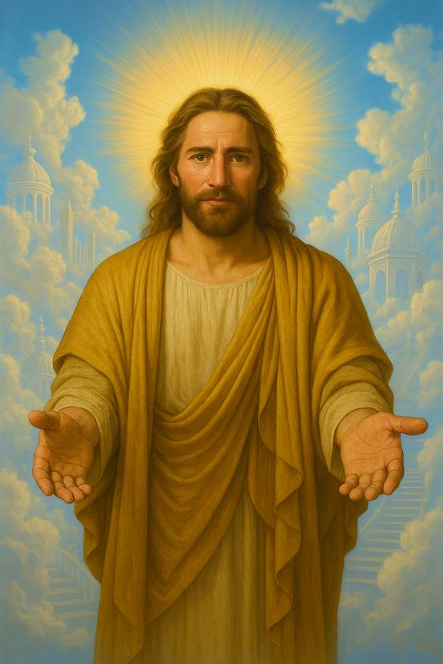

什麼是“落照難”？
“落照難”是指有人繪製侮辱神佛的畫像。雖然神佛本身並不在意這些事，但他們不會接受這樣的畫像作爲供奉，相當於這幅畫作被廢棄。而惡鬼最容易附着在被廢棄的畫像上，從此你供奉的所有東西都會被惡鬼所收取。惡鬼不僅會奪取你的供品，甚至會進入你的身體，侵蝕你的精神力，導致精神力衰弱，使你變得無精打采，最終可能墮入惡鬼道。一個人的精神力一旦下降到極點，就會逐漸顯現出惡鬼的形態；在世間死後，也無法進入靈界，只能墮入惡鬼道。除非通過修煉恢復精神力，才能重新迴歸靈界。
供奉之像的真僞與“落照難”的隱患
“落照難”的情形極爲常見，世間大多數的神像實際上都不是神佛的真實形象。一般來說，世人常供奉三種類型的神像：
第一種，是根本不存在於仙界或佛界的虛假形象；
第二種，是雖然對應於真實存在的神佛，但畫像十分醜陋，與神佛本來的相貌完全不符，甚至有損其尊嚴；
第三種，則是造型得體、能夠正常供奉的畫像，這類神像神佛纔會真正收取供奉。
如果是前兩種，尤其是第二種，比如現今廣爲流傳的釘在十字架上的耶穌畫像，就是一幅被廢棄的像。耶穌曾經立誓，絕不收取通過這幅畫像而來的任何貢品。這類畫像正是惡鬼最喜愛的之一，他們可以在其中爲所欲爲。
附：耶穌真實畫像

這幅畫像由“騰空”通過天眼神通觀見耶穌之後，根據所見形象繪製而成。據騰空所述，此畫像與他天眼中所見的耶穌形象高度一致，復原度接近百分之百。畫像完成後，騰空再次通過天眼拜訪耶穌，並恭敬請示此畫像是否可在人間流傳。耶穌對這幅畫像表示滿意，並准許其在人間廣爲傳播。